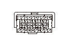

DTC P0563 (34)
DTC P0563（34-2）:
ECU電源供給回路異常
故障診断を始める前に、フリーズ データおよびオンボード スナップショット情報をHDSに保存し、
故障診断の進め方を確認する
再現テスト
1-1
イグニッション スイッチをON（
II
）にする
1-2
HDSでDTCをクリアする
1-3
イグニッション スイッチをOFFにする
1-4
約10秒間待つ
1-5
イグニッション スイッチをON（
II
）にする
1-6
DTCメニュー内のDTC P0563（34-2）をHDSで確認する
◆ DTC P0563（34-2）は表示されているか
YES
-
ステップ
2
へ進む
NO
-
ECUとPGM-FIメイン リレー1間カプラの一時的な接続不良
ECUとPGM-FIメイン リレー1間（MRLYライン）の短絡点検
2-1
イグニッション スイッチをOFFにする
2-2
HDSでSCSモードのSCSショートを実行する
2-3
ECUカプラA（49P）を外す
2-4
ECUカプラA（49P）のNo.7端子とボディ アース間の電圧を測定する
◆ バッテリ電圧が出るか
YES
-
ステップ
4
へ進む
NO
-
ステップ
3
へ進む
ECUとPGM-FIメイン リレー1間（MRLYライン）の短絡点検
3-1
ヒューズ ボックスからPGM-FIメイン リレー1（A）を外す
3-2
ECUカプラA（49P）のNo.7端子とボディ アース間の導通を確認する
◆ 導通があるか
YES
-
ECU（A7端子）とPGM-FIメイン リレー1間コードの短絡を修理後、ステップ
6
へ進む
NO
-
ステップ
5
へ進む

ECUとPGM-FIメイン リレー1間（IGPライン）の短絡点検
4-1
ヒューズ ボックスからPGM-FIメイン リレー1（A）を外す
4-2
ECUカプラA（49P）のNo.9端子とボディ アース間の電圧を測定する
◆ バッテリ電圧が出るか
YES
-
ECU（A9端子）とPGM-FIメイン リレー1間コードの電源への短絡を修理後、ステップ
6
へ進む
NO
-
ステップ
5
へ進む
PGM-FIメイン リレー1の点検
5-1
PGM-FIメイン リレー1を点検する
◆ 正常か
YES
-
ステップ
7
へ進む
NO
-
PGM-FIメイン リレー1を交換後、ステップ
6
へ進む
修理後の点検
6-1
すべてのカプラを再接続する
6-2
イグニッション スイッチをON（
II
）にする
6-3
HDSでPGM-FI ECUをリセットする
6-4
アイドリングの学習を行う
6-5
イグニッション スイッチをOFFにする
6-6
約10秒間待つ
6-7
DTCメニュー内のテンポラリDTCまたはDTCをHDSで確認する
◆ テンポラリDTCまたはDTCは表示されているか
YES
-
•
DTC P0563（34-2）が表示された場合は、ECUとPGM-FIメイン リレー1間カプラの接続不良を点検し、ステップ
1
に戻り再診断を行う
•
DTC P0563（34-2）以外のテンポラリDTCまたはDTCが表示された場合は、表示されたDTCの故障診断を行う
NO
-
故障診断完了
ECUのアップデートまたは交換と修理後の点検
7-1
ECUのプログラムが最新でない場合は、
最新のプログラムにアップデートする
既にプログラムが最新であった場合は、新品ECUで診断する
7-2
DTCメニュー内のテンポラリDTCまたはDTCをHDSで確認する
◆ テンポラリDTCまたはDTCは表示されているか
YES
-
•
DTC P0563（34-2）が表示された場合は、ECUとPGM-FIメイン リレー1間カプラの接続不良を点検し、ステップ
1
に戻り再診断を行う
•
DTC P0563（34-2）以外のテンポラリDTCまたはDTCが表示された場合は、表示されたDTCの故障診断を行う
NO
-
•
ECUのプログラムを最新にアップデートした場合は、故障診断完了
•
新品ECUで診断した場合は、
元のECUを新品ECUに交換する

 故障診断を始める前に、フリーズ データおよびオンボード スナップショット情報をHDSに保存し、
故障診断を始める前に、フリーズ データおよびオンボード スナップショット情報をHDSに保存し、